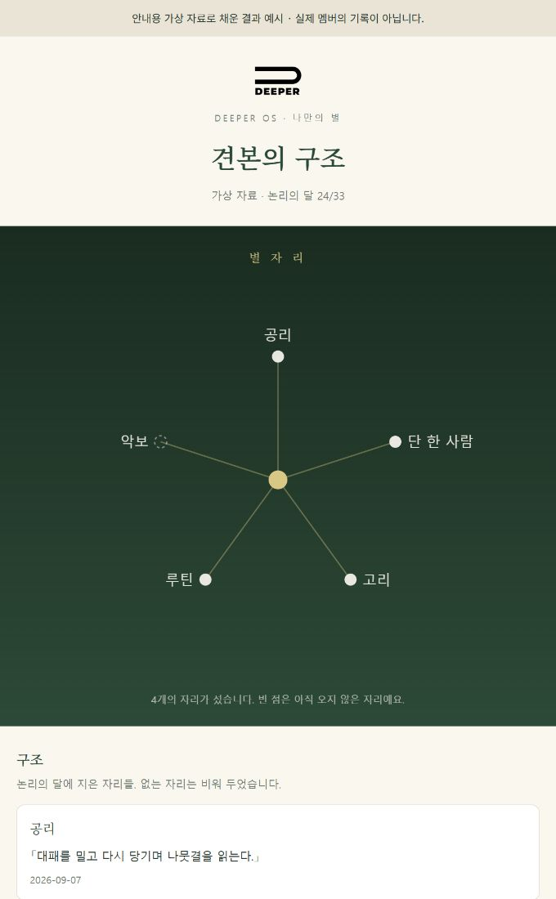
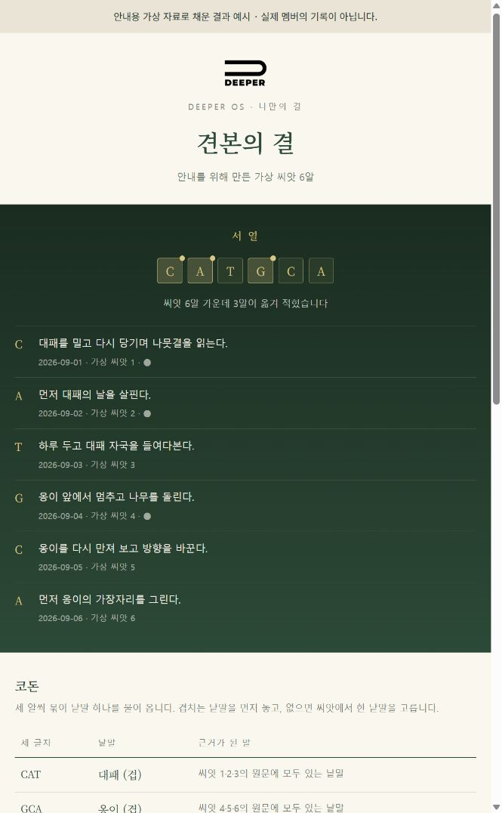

먼저, 여우에게 새옷을
이번에는 공식 플러그인 업데이트로 새옷을 입습니다. 아래 명령 두 줄을 터미널에서 한 줄씩 실행해 주세요. 첫 줄이 끝나면 둘째 줄을 실행합니다.
claude plugin marketplace update deeper-osclaude plugin update deeper-os@deeper-osWindows는 PowerShell, Mac은 터미널 앱에서 실행합니다. 위 두 줄은 대화창에 붙이는 말이 아닙니다.
- 공식 업데이트를 합니다이번 한 번은 위 두 명령으로 받습니다. 이전 버전의 새옷 절차를 안전하게 바꾸는 업데이트가 함께 들어 있습니다.
- 앱을 껐다 켭니다완료 안내를 확인하고 Claude 앱을 완전히 종료했다가 다시 엽니다. 새 대화에서 사막여우를 불러 주세요.
- 두 선물을 부릅니다아래 이름은 평소 사막여우와 이야기하던 Claude Code 대화창에 보냅니다. 하나씩, 차례로 시작합니다.
업데이트가 멈추거나 여우가 선물 이름을 알아듣지 못하면, 그 화면을 찍어 살롱에 보내 주세요. 함께 확인하겠습니다.
GIFT 01 · MY STAR
나만의 별
공리와 규칙, 단 한 사람, 고리와 루틴. 이 달에 지은 것들을 그 재료가 된 씨앗과 잇습니다. 내 문장이 어디로 이어졌는지 한 장에서 봅니다.
나만의 별- 연결 노트 한 장 — 구조와 씨앗을 링크로 잇습니다.
- 별자리 카드 한 장 — 별과 선 아래에 원문과 날짜가 놓입니다.
아직 짓지 않은 자리는 비워 둡니다. 악보가 생긴 뒤 다시 부르면 새로 이어 볼 수 있습니다.
별자리 예시 전체 열기 ↗RESULT EXAMPLE · 카드 첫 화면

GIFT 02 · MY GRAIN
나만의 결
씨앗 한 알에 C·A·T·G 네 글자 가운데 하나를 놓고, 세 알씩 읽어 낱말 사슬을 만듭니다. 그 낱말에서 다음 글의 첫 카드와 개념어 후보를 꺼내 봅니다.
나만의 결- 해설 노트 한 장 — 전사·번역·접힘의 설명과 내 기록을 함께 읽습니다.
- 결 카드 한 장 — 서열, 낱말 사슬, 근거가 된 씨앗을 펼칩니다.
여우가 해설과 카드 틀을 읽어도 되는지 물으면, 선물 제작에 필요한 파일인지 확인하고 허용해 주세요. 씨앗이 적으면 있는 만큼 만듭니다.
결 카드 예시 전체 열기 ↗RESULT EXAMPLE · 카드 첫 화면

AFTER THE GIFT
내 카드에서 한 장을 골라
나누고 싶은 화면 한 장과 눈에 남은 문장 하나를 살롱 나눔 자리에 올려 주세요. 이름이나 개인적인 기록이 보인다면, 나누어도 좋은 부분만 골라 주셔도 됩니다.
두 선물을 다 받을 수 있나요?
네. 「나만의 별」을 받은 뒤 「나만의 결」도 불러 주세요. 두 스킬은 각각 노트와 카드를 만듭니다.
아직 기록을 모두 채우지 못했어요.
지금 있는 기록으로 시작합니다. 구조가 없으면 별자리 제작을 기다리고, 씨앗이 없으면 결 제작을 기다립니다. 없는 내용을 채워 넣지 않습니다.
다음에 또 불러도 되나요?
네. 기록이 늘어난 뒤 다시 부를 수 있습니다. 같은 이름의 파일이 있으면 여우가 먼저 확인을 받습니다.